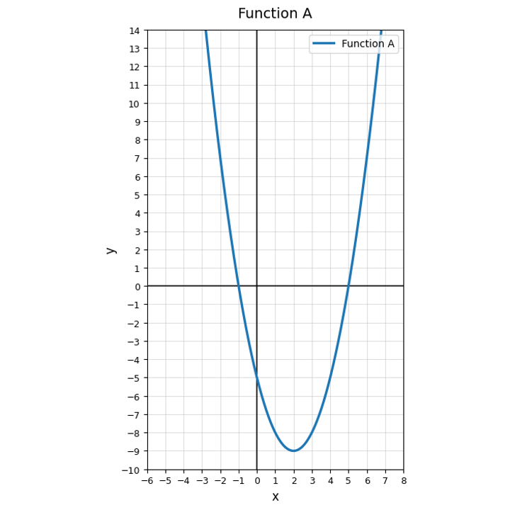
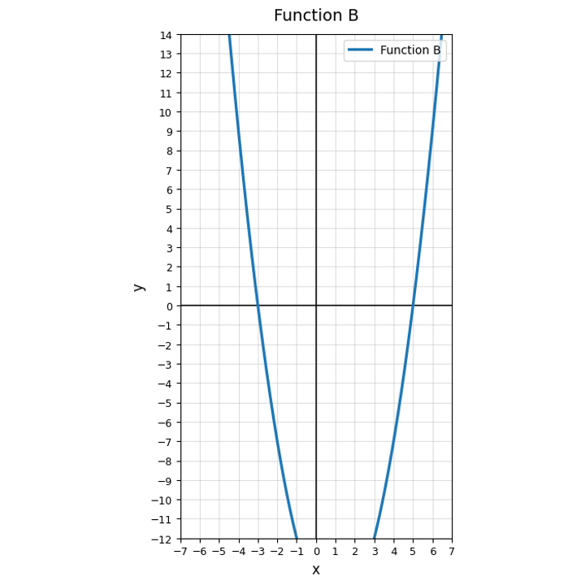

Classify each quadratic form as standard, vertex, or factored.
Which feature is easiest to identify from $y=(x-4)(x+2)$?
For $y=(x-3)^2+5$, identify the vertex and decide whether the function has a maximum or minimum. Explain what the form reveals quickly.
Use Function A. Which form would be most efficient for identifying the vertex? Which form would be most efficient for identifying the zeros?

Find the zeros of $y=(x+5)(x-1)$.
Use Function B. Estimate the $x$-intercepts and explain how they relate to zeros.

Solve using the zero-product property.
$$(x-6)(x+2)=0$$
Complete the sentence: A zero of a function is an input value that makes the output equal to __________.
Write a factored equation for a quadratic with zeros $-4$ and $3$ and leading coefficient $1$.
Complete the table for $y=(x-2)(x+2)$ and identify the zeros from the table.
| $x$ | -3 | -2 | -1 | 0 | 1 | 2 | 3 |
|---|---|---|---|---|---|---|---|
| $y$ |
A student says the zeros of $y=(x+8)(x-2)$ are $8$ and $2$. Analyze the error and correct the zeros.
Create a quadratic in factored form with two zeros that could represent break-even points in a context. Explain what the zeros mean.
Classify $x^2-100$ as a difference of squares, perfect square trinomial, or neither.
Factor completely.
$$x^2-100$$
Factor completely.
$$x^2+18x+81$$
Explain why $x^2+25$ is not a difference of squares over the real numbers.